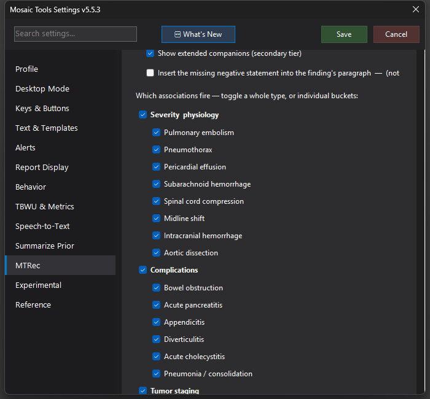

MTRec Associations
A completeness checklist against satisfaction-of-search — for each major finding you dictate, a small popup lists the companion findings that usually travel with it, marked addressed, missing, or N/A for this study type. It never inserts text.


What it does
Satisfaction of search is the enemy: you call the pulmonary embolism and move on without commenting on right-heart strain. Associations is a second MTRec pass built against exactly that. When a primary finding is detected — cirrhosis, bowel obstruction, PE, hydronephrosis, pancreatic mass, midline shift, intracranial hemorrhage, AAA, and ~27 categories in all across five groups (Severity & physiology, Complications, Tumor staging, Extent & source, acute OB-Gyn) — a small popup lists its companion findings, each marked:
- ✓ (green) — the report addresses it, in either polarity: a negated companion ("no portal vein thrombosis") counts as addressed, because you looked.
- ● (red) — not addressed anywhere in the report.
- – N/A (grey) — not assessable on this study type, with the reason (portal-vein clot on a non-contrast CT, marrow edema on a CT rather than MR).
It is read-only by design. It never inserts or changes text, and the recommendation pass is unaffected.
How to turn it on / set it up
Settings → MTRec → Enable MTRec Associations (off by default). Under it:
- Show extended companions (secondary tier) — adds the dimmer, complementary items a thorough read covers anyway (clot burden for PE, underlying cause for an obstruction). Core lists are always shown.
- Per-group and per-bucket checkboxes control exactly which associations fire — toggle a whole type or a single finding.
Using it
The checklist appears on the MTRec key (press again to refresh), or via the amber boxes after Process Report. Glance, cover the red dots in your dictation, click anywhere to dismiss. It remembers its position, and closes itself when you sign or discard the study.
Tips & gotchas
Companion detection was corpus-validated across thousands of real reports (5.4.17), so spurious checklists are rare — but a red dot is a prompt to consider, not an assertion that something is wrong. The "Insert the missing negative statement" option in Settings is a placeholder and currently does nothing.